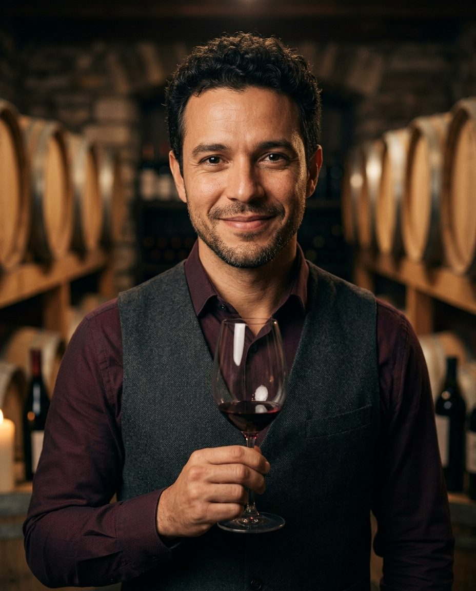

Velluto Dining Group
DubaiHead Sommelier, three restaurants
Runs a 1,400-label list, a zero-proof pairing menu and a team of 22. Beverage revenue up 36% in two years.
Est. 2008
Head Sommelier
Advanced Sommelier · WSET Diploma
Dubai · São Paulo · London
Cuvée 2026 · open to new roles
I build wine programmes that guests remember, and that pay for themselves.
Sixteen years on the floor, served by the glass.
Head Sommelier, three restaurants
Runs a 1,400-label list, a zero-proof pairing menu and a team of 22. Beverage revenue up 36% in two years.
Sommelier, then Head Sommelier
Built a 600-label South American list and a natural-wine pairing that sold out every weekend.
Assistant Sommelier
Learned classic service on a 900-bin list in a traditional London dining room.
Hospitality diploma, then commis sommelier
Four years learning the basics, from cellar stock to the first table service.
Three things guests notice, even when they can't name them.
I read the table before I read the list: the occasion, the budget, the mood.
Every list needs great bottles at every price, by the glass and by the bottle.
The goal is the pairing guests are still talking about on the way home.
Seven courses of teas, ferments and verjus. Now 18% of all pairing sales.
Monthly classes for 40 guests, usually sold out a month ahead.
Weekly tastings for the floor team; six passed their first sommelier exams.
“A great bottle is a story. My job is to tell it in thirty seconds.”Lucas Ferreira
Lucas is open to Head Sommelier and Beverage Director roles in Dubai and the wider Gulf.